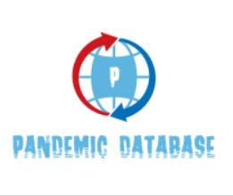

The topic our team has chosen is Database Generation for Pandemic Outbreaks. The 1918 Influenza outbreak for example was the deadliest pandemic of the 20th century. Better known as the Spanish Flu, it killed an estimated 50 million people worldwide.
Now, we are facing yet another pandemic in the form of Coronavirus, where it has spread across the globe and has its local variations too. Influenza and Coronavirus share basic similarities in the way they’re transmitted via respiratory droplets and the surfaces they land on.

Varied Databases exist for the major pandemics around the world as in we have primary databases and specific databases for like virus but we don't have a separate database for Pandemics as such.
To find sequences and sequence data-sets of interest more easily via filtering of data along normalized metadata.Here, our main aim would be the classifying and categorising the datasets collected into a single database useful for researchers for analysing the statistics and similarities associated with them.Standardized and coordinated international information sharing is crucial for crisis management at global and national levels.